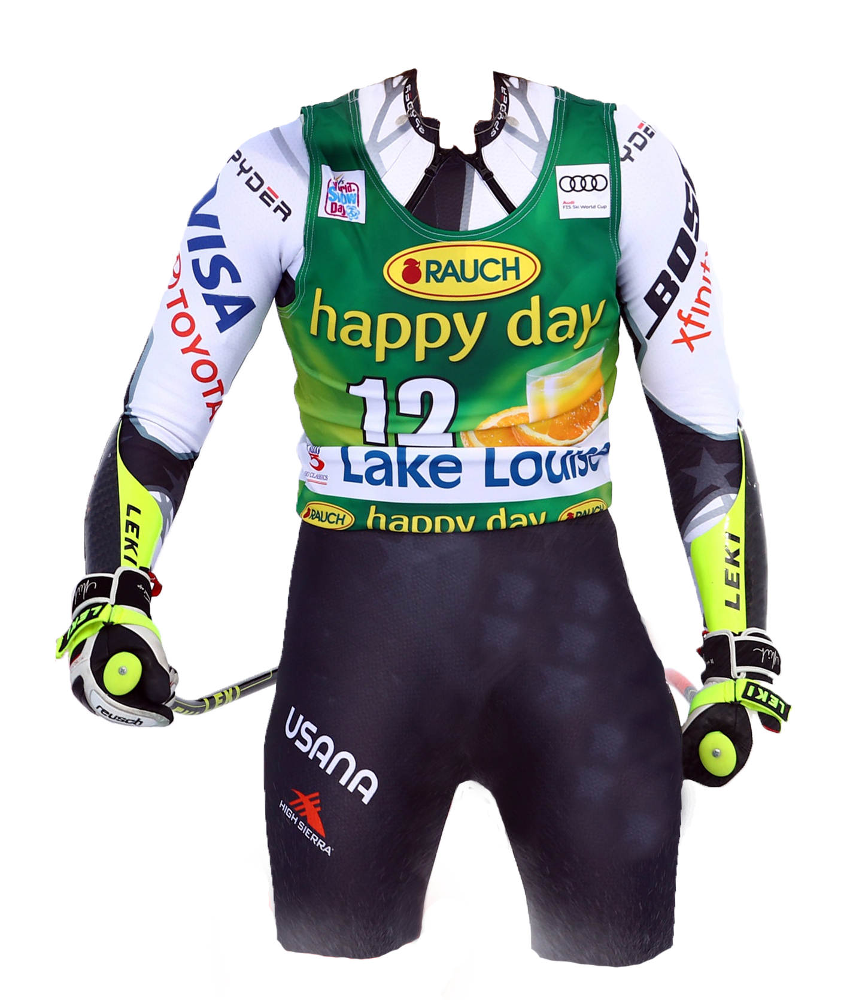
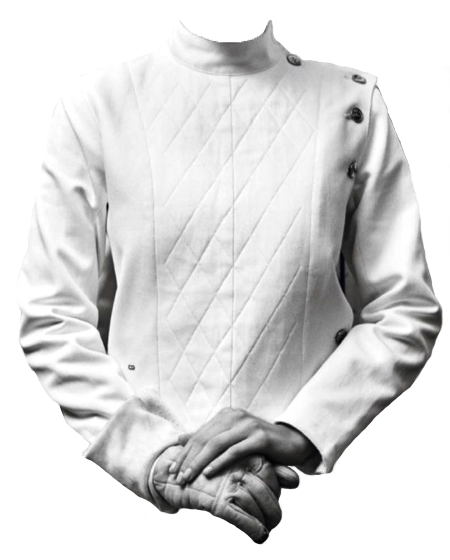
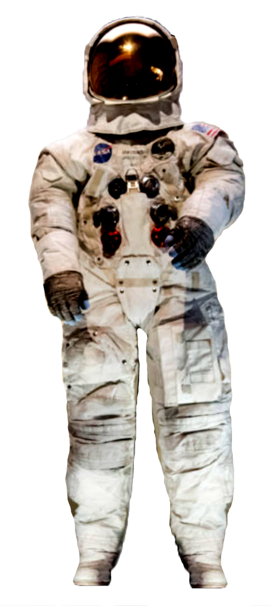
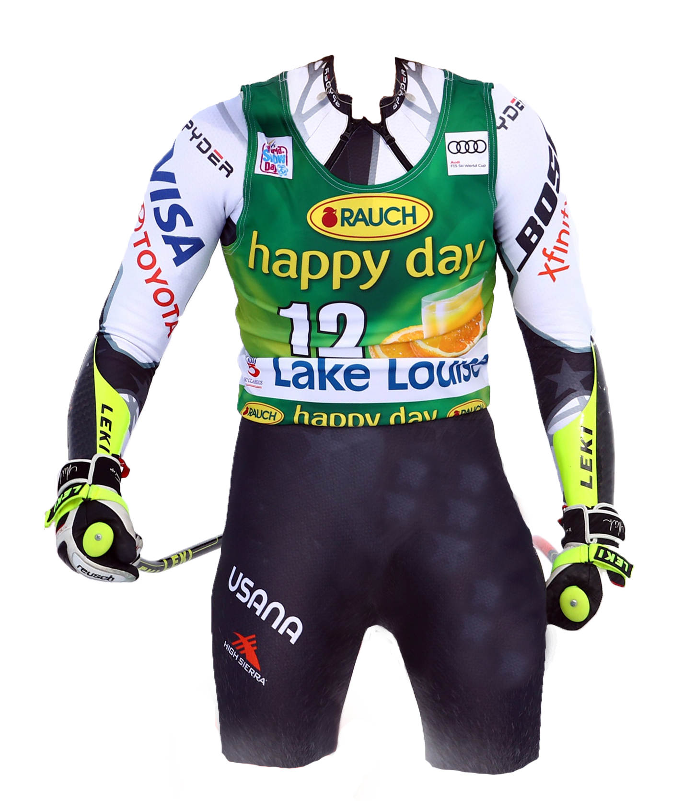
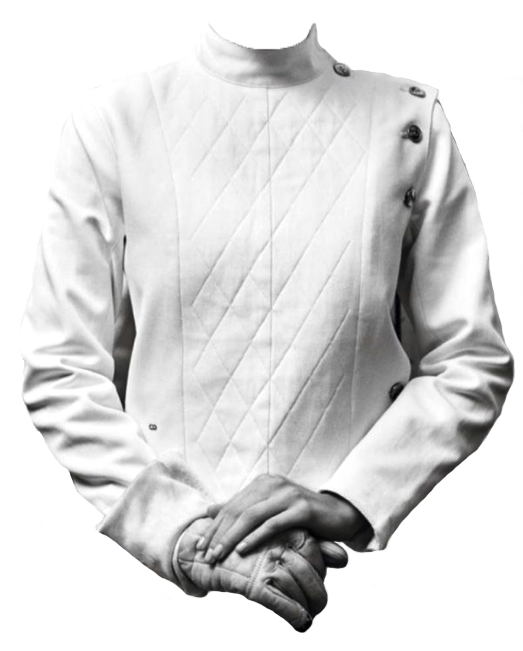
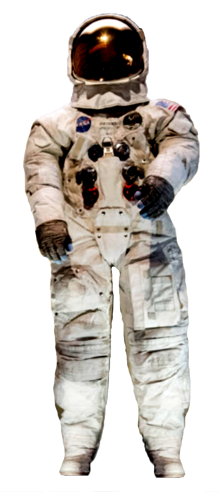
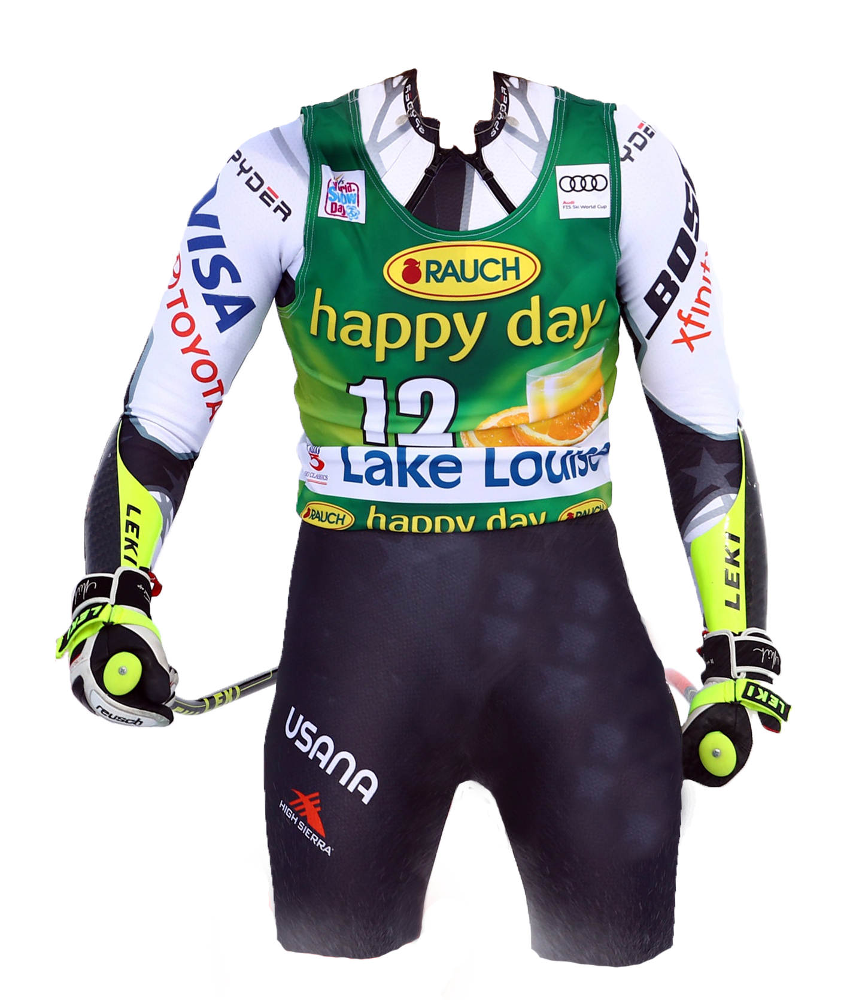
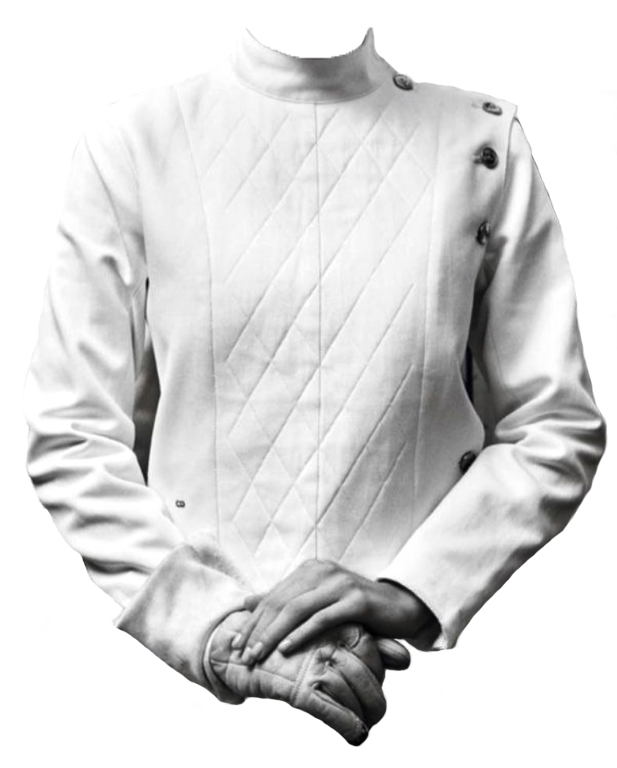
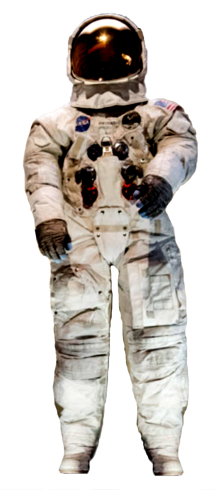

This page of the website was initially going to hold a game prototype entitled Gitmoji-Game. This game is a work in progress, and unfortunatly the protype is still in development. In hindsight the Gitmoji-Game would greatly benefit from being re-written from scratch using Bootstrap. Which would aliviate the intensive element interaction and positioning. Therefore we have decided to include a snippet of the selection process and preview of the work in progress; below.


